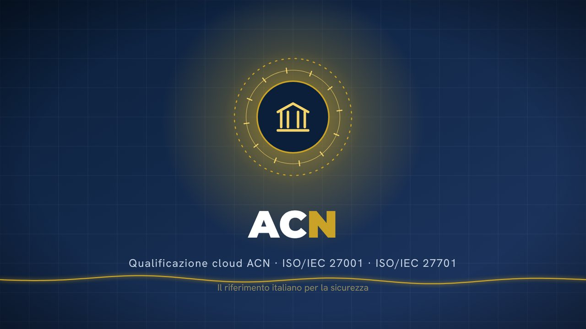

ARG
ARGARGOS › La normativa in 4 minuti › Qualificazione ACN e ISO
Qualificazione ACN e ISO in 4 minuti: Una prova non è un modulo
Accanto alla qualificazione ACN c'è la norma internazionale ISO 27001, con la ISO 27701 per la privacy. È il riferimento, in attesa dello schema europeo per il cloud. E una prova non è un modulo.

- 0:00La gara
- 0:10Qualificazione ACN
- 0:26La prova
- 0:40Il quadro
- 0:53Ciclo SGSI
- 1:0593 controlli
- 1:15Le prove
- 1:34Chi lo chiede
- 1:45L'ACN
- 2:02Cosa fare
Dati chiave
- ACN Qualificazione dei servizi cloud
- ISO 27001 gestione della sicurezza
- ISO 27701 gestione della privacy
- ACN cloud qualificato per la PA
- EUCS schema europeo, in negoziazione
- Perimetro Sistemi e servizi
- Rischi Analisi preliminare
- Applicabilità Giustificare ogni misura
Trascrizione
Testo completo della voce narrante
0:00 · La gara
Una gara pubblica. Un servizio cloud. Un'offerta impeccabile. E una riga nel capitolato. Il servizio è qualificato ACN?
0:10 · Qualificazione ACN
In Italia, per lavorare con la pubblica amministrazione, la chiave è la qualificazione dei servizi cloud dell'ACN. Con un catalogo pubblico, è il requisito finché non esiste uno schema europeo. Senza qualificazione, molte porte restano chiuse.
0:26 · La prova
E una prova non è un modulo. Definire il perimetro. Analizzare i rischi. Giustificare ogni misura nella dichiarazione di applicabilità. Superare un audit indipendente. E rinnovarlo regolarmente.
0:40 · Il quadro
Accanto alla qualificazione ACN c'è la norma internazionale ISO 27001, con la ISO 27701 per la privacy. È il riferimento, in attesa dello schema europeo per il cloud.
0:53 · Ciclo SGSI
Un sistema di gestione della sicurezza segue un ciclo. Contesto e perimetro. Valutazione e trattamento dei rischi. Attuazione delle misure. E audit e miglioramento continuo.
1:05 · 93 controlli
La ISO 27001 contiene 93 controlli in quattro temi. Organizzativi. Sulle persone. Fisici. E tecnologici.
1:15 · Le prove
Le prove in sintesi. ISO 27001: il sistema di gestione della sicurezza. ISO 27701: la gestione della privacy. Qualificazione ACN: il cloud per la pubblica amministrazione. E lo schema europeo, ancora in negoziazione.
1:34 · Chi lo chiede
Chi lo chiede? La pubblica amministrazione. I soggetti NIS2 e il perimetro cibernetico. Banche e assicurazioni. La sanità. E le imprese che acquistano cloud.
1:45 · L'ACN
Dietro c'è l'ACN, autorità nazionale di certificazione. Qualifica i servizi cloud per la pubblica amministrazione. Gestisce il catalogo pubblico dei servizi qualificati. E l'Europa negozia il nuovo regolamento sulla cybersicurezza e lo schema cloud.
2:02 · Cosa fare
Cosa fare adesso. Definire il perimetro, valutare i rischi, pianificare la qualificazione e sapere dove sono i dati sensibili. ARGOS tiene aggiornate applicabilità e prove, e le collega a NIS2, GDPR e regolamento sull'IA, senza doppioni. ACN e ISO: una fiducia che si dimostra.
Domande frequenti
Che cos’è Qualificazione ACN e ISO?
Accanto alla qualificazione ACN c'è la norma internazionale ISO 27001, con la ISO 27701 per la privacy. È il riferimento, in attesa dello schema europeo per il cloud. In Italia, per lavorare con la pubblica amministrazione, la chiave è la qualificazione dei servizi cloud dell'ACN. Con un catalogo pubblico, è il requisito finché non esiste uno schema europeo. Senza qualificazione, molte porte restano chiuse.
Che cosa richiede Qualificazione ACN e ISO?
Un sistema di gestione della sicurezza segue un ciclo. Contesto e perimetro. Valutazione e trattamento dei rischi. Attuazione delle misure. E audit e miglioramento continuo.
Quali sono le date chiave?
Le prove in sintesi. ISO 27001: il sistema di gestione della sicurezza. ISO 27701: la gestione della privacy. Qualificazione ACN: il cloud per la pubblica amministrazione. E lo schema europeo, ancora in negoziazione.
Qual è la situazione in Italia?
E una prova non è un modulo. Definire il perimetro. Analizzare i rischi. Giustificare ogni misura nella dichiarazione di applicabilità. Superare un audit indipendente. E rinnovarlo regolarmente. Dietro c'è l'ACN, autorità nazionale di certificazione. Qualifica i servizi cloud per la pubblica amministrazione. Gestisce il catalogo pubblico dei servizi qualificati. E l'Europa negozia il nuovo regolamento sulla cybersicurezza e lo schema cloud.
Che cosa deve fare un’impresa adesso?
Cosa fare adesso. Definire il perimetro, valutare i rischi, pianificare la qualificazione e sapere dove sono i dati sensibili. ARGOS tiene aggiornate applicabilità e prove, e le collega a NIS2, GDPR e regolamento sull'IA, senza doppioni. ACN e ISO: una fiducia che si dimostra.
Fonti ufficiali
- ISO/IEC 27001
- ISO/IEC 27701
- Agenzia per la cybersicurezza nazionale (ACN)
- Schede normative di Software in a Box
Continua con
 GDPR
GDPRGDPR in 4 minuti: Si sanziona soprattutto l'essenziale
 EHDS
EHDSEHDS in 4 minuti: Per ospedali e produttori
 Regolamento sull'IA
Regolamento sull'IARegolamento sull'IA in 4 minuti: Italia: regolamento più legge nazionale
Voce e musica generate con intelligenza artificiale (art. 50 del regolamento sull’IA). Informazione generale, non costituisce consulenza legale; situazione a novembre 2026, secondo le schede normative di Software in a Box. Clip video su licenza Envato.
Per inserire questa presentazione in un altro sito: <iframe src="https://argos.softwareinabox.eu/it/normativa/acn-iso-27001/presentacion/?embed=1" width="960" height="540" allow="autoplay; fullscreen" title="Qualificazione ACN e ISO in 4 minuti: Una prova non è un modulo"></iframe> con un link a questa pagina.
Disponibile anche in: EspañolDeutschFrançaisFrançais (Belgique)NederlandsNederlands (België)PortuguêsDansk